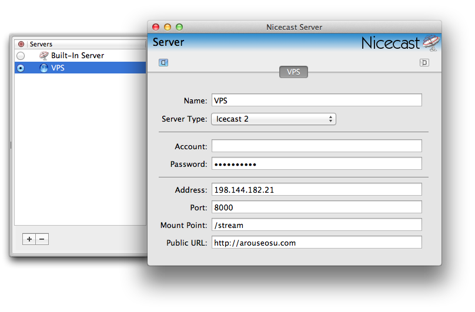

Troubleshooting Tips
Q: Nicecast can’t connect.
A: Check the streaming server:
- Call Adam to start the streaming server (he's working on a button for you to click, but he has other priorities).
- Go to Nicecast and check that it has connected, or click the “Start Broadcast” button.
- If that doesn't work, go to the menu item Window > Show Server and check that the settings match:

- Talk or play music.
Q: iPod/computer/microphone sound isn’t playing (meaning the lights on the sound board aren’t moving).
A: Double check these:
- The channel is unmuted (the light should be off)
- The volume slider is turned up (it should be around the ‘0’ marker)
- The volume is turned up on the iPod/Spotify
- The music is actually playing (press play a couple times just to be sure)
- The cable is plugged in properly in the board and the device (unplug it and plug it back in if necessary)
- Computer specific steps:
- Press command + space.
- Type "System Preferences"
- Click "Sound"
- In the "Output" tab, select "Headphones" and check that the volume slider at the bottom is at about 80%.
Q: Listeners are saying the music keeps cutting out.
A: Nothing we can do, unfortunately. Our internet connection is kind of slow. The only suggestion is to avoid browsing the internet using Rendezvous’ connection.